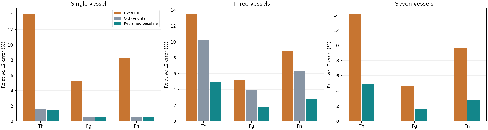
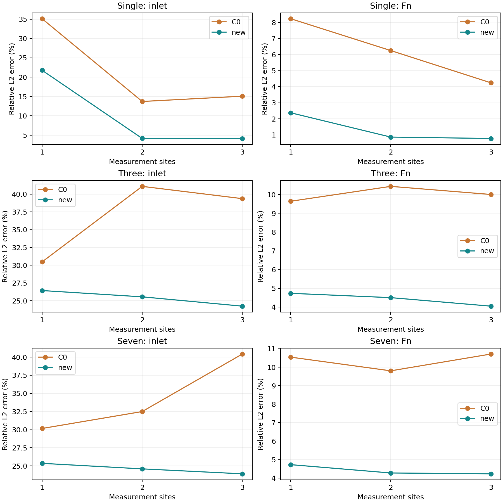

本轮保持已有架构不变，用统一生成的独立 CFD 生化数据重新训练单血管、三血管和七血管基线。旧模型和旧结果已保留。
三种血管使用同一批 112 条入口曲线：64 条训练、16 条验证、32 条测试，采样范围一致。每条完整网络轨迹只属于一个分组。C0 和神经网络共用血流、观测、噪声和评分规则。每种血管单独训练权重，七血管沿用三血管的结构和训练目标。
这里的 CFD 仍是数值参考。此次检验的是固定血流条件下的新生化入口，尚不代表对任意血流的泛化。
以下误差越低越好。重训神经网络一栏是三个种子的平均误差；旧权重一栏是在同一新参考下重放历史模型得到的结果。
| 方法 | Th | Fg | Fn |
|---|---|---|---|
| 固定 C0 | 14.09% | 5.31% | 8.27% |
| 重训神经网络（3 种子平均） | 1.41% | 0.60% | 0.52% |
| 旧权重 | 1.57% | 0.60% | 0.52% |
| 方法 | Th | Fg | Fn |
|---|---|---|---|
| 固定 C0 | 13.56% | 5.22% | 8.90% |
| 重训神经网络（3 种子平均） | 4.92% | 1.85% | 2.74% |
| 旧权重 | 10.28% | 3.97% | 6.29% |
| 方法 | Th | Fg | Fn |
|---|---|---|---|
| 固定 C0 | 14.19% | 4.60% | 9.65% |
| 重训神经网络（3 种子平均） | 4.91% | 1.60% | 2.78% |
只观测 Th 和 Fg，同时评价入口恢复和三种物质。下面是带噪声结果，不能仅根据 Fn 更准就宣称入口也恢复得更好。
| 测点数 | 方法 | 入口 | Th | Fg | Fn |
|---|---|---|---|---|---|
| 1 | 固定 C0 | 35.12% | 13.42% | 3.85% | 8.23% |
| 1 | 重训神经网络（3 种子平均） | 21.78% | 6.10% | 0.76% | 2.38% |
| 2 | 固定 C0 | 13.71% | 9.93% | 3.77% | 6.25% |
| 2 | 重训神经网络（3 种子平均） | 4.15% | 1.96% | 0.62% | 0.86% |
| 3 | 固定 C0 | 15.08% | 8.41% | 3.40% | 4.24% |
| 3 | 重训神经网络（3 种子平均） | 4.14% | 1.87% | 0.60% | 0.78% |
| 测点数 | 方法 | 入口 | Th | Fg | Fn |
|---|---|---|---|---|---|
| 1 | 固定 C0 | 30.47% | 13.74% | 3.89% | 9.64% |
| 1 | 重训神经网络（3 种子平均） | 26.44% | 7.83% | 1.85% | 4.73% |
| 2 | 固定 C0 | 41.09% | 15.42% | 3.79% | 10.44% |
| 2 | 重训神经网络（3 种子平均） | 25.56% | 7.58% | 1.62% | 4.50% |
| 3 | 固定 C0 | 39.37% | 14.89% | 3.74% | 10.00% |
| 3 | 重训神经网络（3 种子平均） | 24.25% | 7.24% | 1.60% | 4.05% |
| 测点数 | 方法 | 入口 | Th | Fg | Fn |
|---|---|---|---|---|---|
| 1 | 固定 C0 | 30.17% | 14.64% | 3.84% | 10.54% |
| 1 | 重训神经网络（3 种子平均） | 25.36% | 7.60% | 1.70% | 4.72% |
| 2 | 固定 C0 | 32.50% | 13.91% | 3.31% | 9.80% |
| 2 | 重训神经网络（3 种子平均） | 24.60% | 7.22% | 1.52% | 4.27% |
| 3 | 固定 C0 | 40.43% | 15.25% | 3.21% | 10.71% |
| 3 | 重训神经网络（3 种子平均） | 23.91% | 6.94% | 1.40% | 4.23% |
七血管已从原始数值血流档案的边界和几何出发，独立求解七段轴对称血流及三个分叉的耦合，再生成 Th、Fg、Fn 参考数据。它沿用三血管的网络结构和训练目标，扩展连接关系，并完成三个随机种子的训练，以及和固定 C0 的预测与稀疏反演对照。这里没有使用 Sen 神经网络预测的血流来生成标签。
这套结果固定后，可以与后续自己设计的新模型比较。新模型应使用相同训练与验证划分；后续研究不要根据已公布测试成绩反复调参后，再把同一测试集称为盲测。
单血管和三血管的旧架构本来不同，本轮分别保留了它们。七血管沿用三血管的网络和训练目标。数据、划分和评分统一，不意味着把两套既有网络改成了同一个网络。
这里比较的是固定的常规一维 C0。神经网络学习了截面内浓度分布对平均输运和反应的影响；这项对照不能证明图结构本身具有独有优势，也不能证明它优于所有可能校准过的数值闭合。
三血管带噪声的入口恢复平均误差范围为 24.2%–26.4%。相比 C0 有改善，但入口恢复还不够准确。单血管的第二个测点靠近入口，分叉网络的新增测点位于更远的下游，因此不能把不同网络的反演差异全归因于血管数量。
七血管采用七段轴对称血流加分叉耦合，没有模拟完整三维分叉几何。生化网格加密检查已完成；七血管血流网格本身尚未做完整的收敛研究。
表中 C0 的入口误差不一定随测点增加而下降。多测点会同时约束更多位置，而近似模型可能无法同时匹配这些位置；正则化强度也按各方法的全部测点布局统一选择。这轮可以检查优化是否收敛，但没有单独量化上述因素各自贡献多少。
本轮没有进行受控的速度测试，不能根据这次运行耗时宣称神经网络更快。

